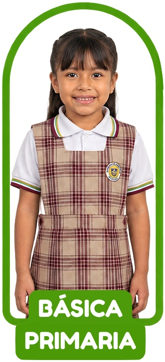
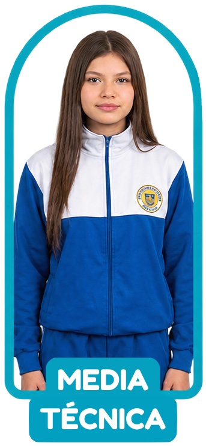
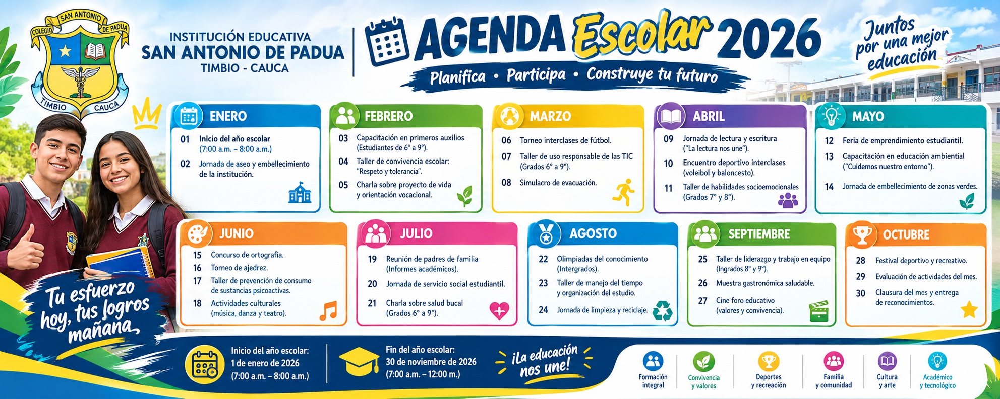

Oferta Académica

Materias
Lenguaje y comunicación
Fortalecimiento de la lectura, la escritura, la expresión oral y la comprensión como herramientas para comunicarse y aprender.
Pensamiento lógico y matemático
Desarrollo del razonamiento, la resolución de problemas y la comprensión de conceptos matemáticos aplicados a diferentes situaciones.
Ciencias, tecnología y entorno
Exploración del entorno, pensamiento científico y uso responsable de la tecnología como apoyo para el aprendizaje.
Plataforma de Notas
La consulta de notas se realiza en la plataforma SIGIA. El ingreso y la autenticación se hacen directamente en ese sitio.
Ingresar a la plataforma de notas (se abre en una pestaña nueva)Agenda Escolar
